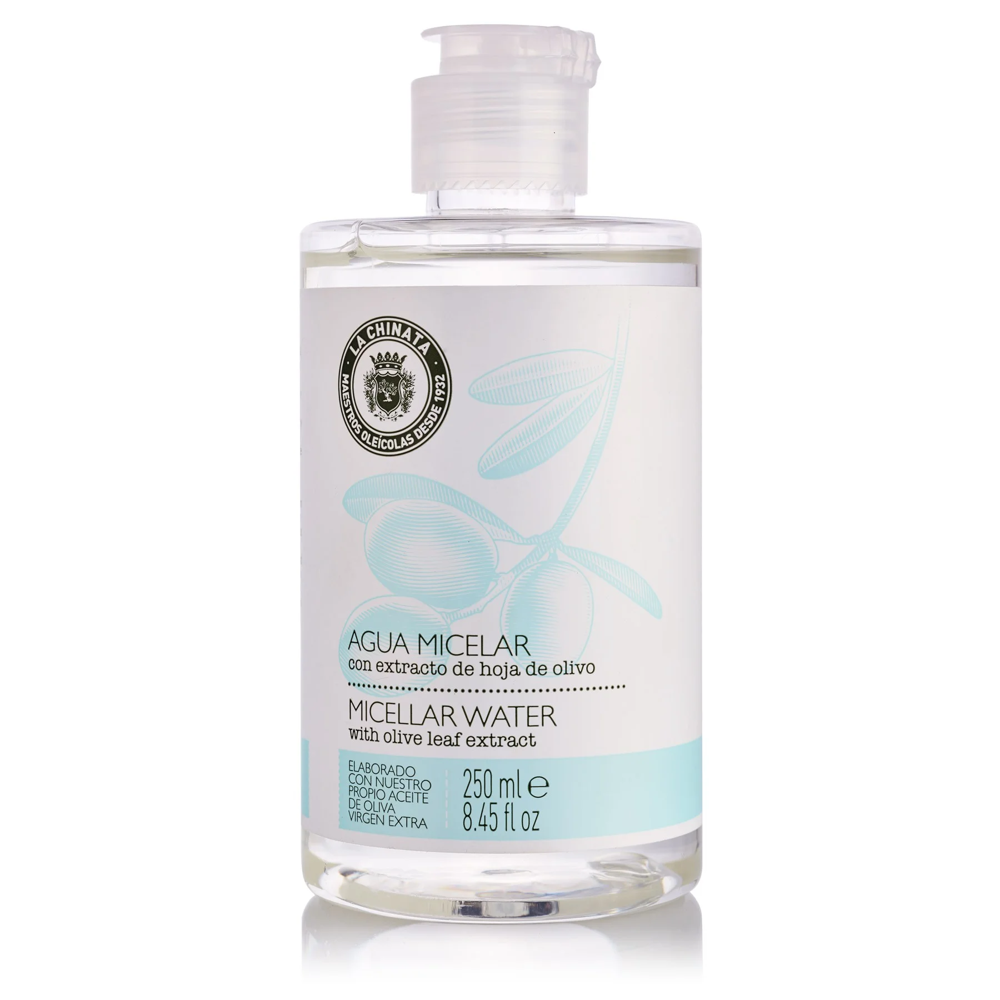

Cosmetic Made in Spain
聯繫我們
產品展示
LA CHINATA MICELLAR WATER WITH OLIVE LEAF EXTRACT

65kr 250ml
La Chinata Micellar Water with Olive Leaf extract is easy to apply, cleaning, toning and moisturizing the skin in a single step, thanks to its formula based on micelles, an aggregate of molecules that attract dirt and sebum on the face, isolating and transporting them through water so as to remove any dirt from the skin. In addition to all the usual benefits of Micellar Water, this one from La Chinata is formulated with Olive Leaf Extract that acts as an antioxidant, purifier, anti-inflammatory, antiseptic and antimicrobial agent. Furthermore, it also contains Aloe Vera, an extremely effective moisturizing agent characteristic for its repairing effect, as well as Panthenol, Marigold and Thermal Waters. Thanks to this formula, it is perfect for removing make-up from all kinds of skin, especially the most sensitive ones, on areas like the face, eyes and lips, or even for cleaning the skin before applying a specific treatment, like serum or night cream. Another of the characteristics of this product is that it preserves the skin’s natural pH, therefore preventing the skin from being dry, greasy or irritated.
Vida Copyright © 2024 All rights reserved